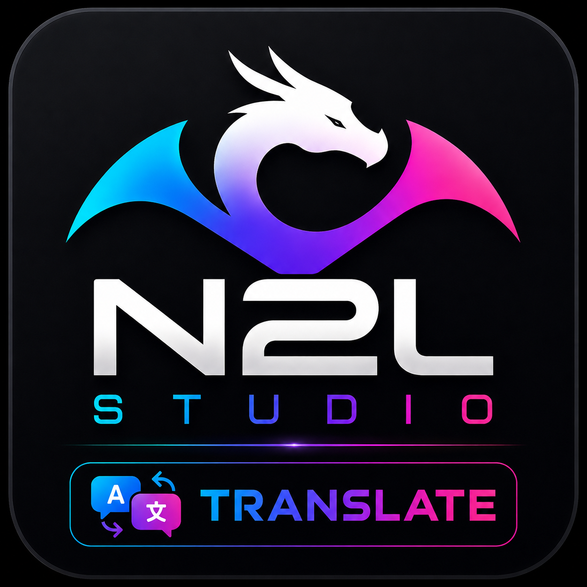

N2L Studio Android
La déclinaison Android de N2L Studio, pensée pour retrouver des outils utiles directement sur mobile.
- Application Android
- Interface adaptée au mobile
- Évolution progressive
Des petites applications et des utilitaires créés simplement, au fil des idées et des besoins.
Je développe en autodidacte sur mon temps libre. Je ne suis pas une agence ni un développeur professionnel : j'aime surtout apprendre, tester et essayer de créer des outils utiles et accessibles.
Le site sert à regrouper mes projets au même endroit, suivre leur évolution et proposer les téléchargements lorsqu'ils sont disponibles.

Trois projets sont affichés pour le moment. N2L Studio Translate est encore en développement.
La déclinaison Android de N2L Studio, pensée pour retrouver des outils utiles directement sur mobile.

Une version plus légère de N2L Studio, conçue pour aller à l'essentiel avec une interface simple et rapide.

Un projet de traduction pensé pour les lives et contenus diffusés sur TikTok, Twitch et d'autres plateformes.
Je développe de petites applications en autodidacte pendant mon temps libre. Je construis d'abord pour apprendre et pour répondre à des besoins concrets que je rencontre ou que l'on me suggère.
Si une application vous est utile, un soutien est toujours apprécié. Une page de paiement ou de don pourra être ajoutée plus tard.
Paiement à venir